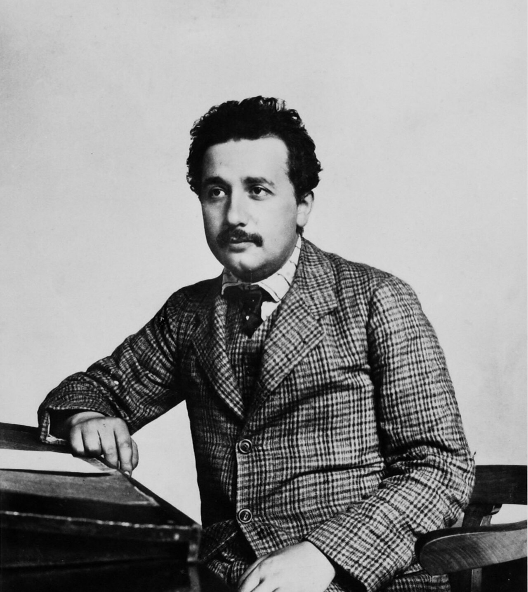
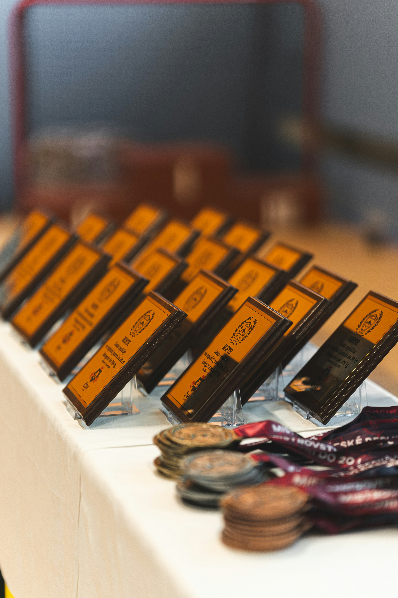

Slowing down to speed scientific progress
Adrian Barnett
4 November 2026
4 November 2026
Queensland University of Technology
Slow bicycle race photo by Casa-Steve on flickr CC BY-NC-ND 2.0
My first professional job
1994
Harlow, Essex

How many discoveries should we expect per 10 years of a normal scientific career?
My numbers
1 per 10 years for a discovery
1 per 2 years for replicating previous discoveries
Prestige games

Hyper-inflation

Slop signs
AI overload

Fighting back

Turn down the heat
Future headline?
University of X becomes the world’s first university to put an upper limit on the number of papers staff should publish per year
Individuals: leave paper trails

Governments and funders: Money for quality control
- The American Society for Quality states that organisations typically spend 10 to 15% of their operating costs on quality-related costs
- Using the health and medical research budget in Australia, this would mean $740 million per year on quality-related work
Incentives
We need to shift the goalposts from quantity to quality
Proposed random audits of universities, but these are expensive; DOI: 10.1371/journal.pone.0195613

Desperate times, desperate measures
- LLM peer reviews can be good
Desperate times, desperate measures
LLM peer reviews can be good
What if the LLMs reviewed everything and the models rewarded rigorous and well-reported research?
Create league tables? Label “low value” research?
:::
::::